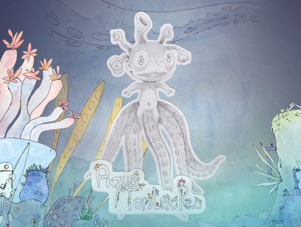

Game Jam-#8 - « Aquatic Tentacles »
Introduction
Taking advantage of their capacity for evolution , humans must now survive in this hostile environment by eating what they find and avoid deadly traps submarine funds. So this is a 2D arcade game that will take us to embody a human user of genetic improvements, like tentacles , and to feed and survive in an underwater jungle filled with various threats. This game was develop as part of GameDevParty # 8 . 72h to develop a video game. Three days during which a team of random person must design , develop the game. The project was realized with Unity.
GamJolt Link : http://gamejolt.com/games/aquatentacles
Credits
- Maud Boué - project manager and graphic designer
- Kevin Kerisit - graphic designer
- Antoine Renaud - sound designer
- Tristan Brismontier - developer
- Julien Bavoysi - developer
- Thomas Picard - developer
License

Licensed under Creative Commons Attribution 4.0
Github repository : Unity